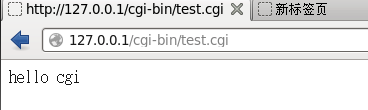

Apache支持cgi
1、打开Apache配置文件httpd.conf，搜索“cgi”，找到下面的一段，去掉“addhandler”前面的“#“，这样就开启了Apache的cgi功能
|
|
2、cgi的目录在“/var/www/cgi-bin/”，在这里创建一个测试文件“test.cgi”输入内容如下
|
|
3、将“cgi-bin”的权利改为777
|
|
4、在浏览器输入“127.0.0.1/cgi-bin/test.cgi”可以看到下面的结果

Copyright@david zhytwj2018@163.com